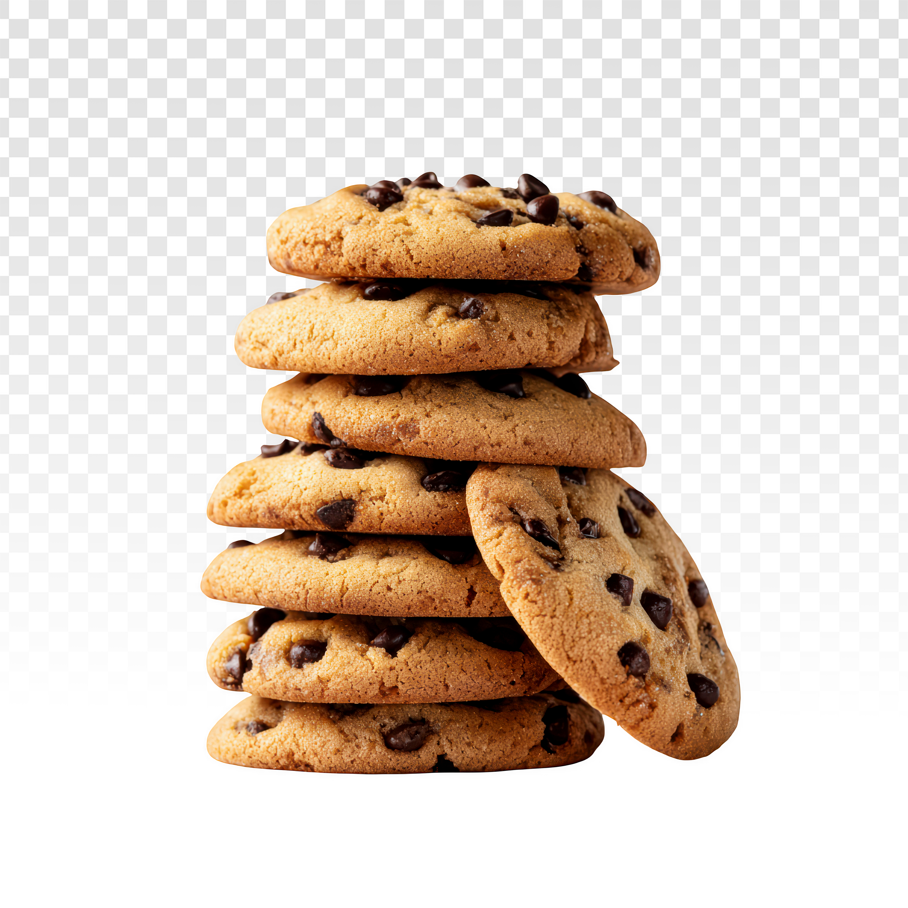

Cookies

Description
This chocolate chip cookie recipe makes dozens of cookies with crisp edges, chewy centers, and melty chocolate chips. It is truly the best! With more than 14,000 rave reviews from the Allrecipes community, this top-rated chocolate chip cookie recipe will quickly become your go-to for every occasion
Ingredients
- Butter:This classic chocolate chip cookie recipe starts with two sticks of butter creamed with white and brown sugars. The blend of sugars creates a perfectly balanced flavor.
- Eggs:Eggs add moisture and act as a binding agent, which means they help hold the dough together.
- Vanilla:Vanilla extract enhances the overall flavor of the chocolate chip cookies.
- Baking soda:Baking soda acts as a leavener, which means it helps the cookies rise.
- Water:A bit of hot water creates steam as it bakes, working with the baking soda to puff the cookies up.
- Salt:A pinch of salt enhances the flavors of the other ingredients, but it won't make the cookies taste salty.
- Flour:All-purpose flour helps create gluten, which adds structure to the cookie dough.
- Chocolate-chips:Of course, you'll need semisweet chocolate chips! You can use dark or milk chocolate chips if you prefer.
- Nuts (optional):Walnuts are optional, but they add nutty flavor and a welcome crunch.
Directions
Bake in a preheated 350 degrees F (175 degrees C) oven — the chocolate chip cookies should be perfectly baked in about 10 minutes. The edges should be golden brown and the cookies should be mostly set (they'll continue to set as the cool).